Adapting the Interface, Not the Model: Runtime Harness Adaptation for Deterministic LLM Agents
这篇论文把 agent 失败从“模型能力不够”重新定位为“模型与确定性环境之间的 runtime interface 不匹配”。LIFE-HARNESS 不改模型权重、不改评测环境，而是从训练轨迹中把反复出现的 contract、skill、action realization 和 trajectory degeneration 问题沉淀成固定 harness，在 7 个确定性 agent 环境、18 个模型 backbone 上改善 116/126 个 model-environment settings。
1. 研究动机：agent 不是单独一个 LLM
论文的核心判断是：在数据库、网页购物、OS 控制、客服 workflow、ALFWorld 等 deterministic, rule-governed environments 中，许多失败不是静态 reasoning benchmark 能力不足，而是 observations、tools、actions、feedback、stopping conditions 与模型输出之间的接口错配。把所有环境约束吸收到模型参数里代价高、模型相关，也很难跨 backbone 复用。
模型侧适配的局限
SFT、RL、distillation 或 tool-use training 会把环境规则写进某个 checkpoint。换模型、换环境或协议微调后，训练成本和分布耦合会重新出现。
确定性环境的结构外显
工具 schema、SQL 方言、可执行 action set、错误反馈、预算耗尽、重复无效动作等规则通常是稳定的，适合作为 runtime harness 的显式约束。
LIFE-HARNESS 的定位
它不是训练新 policy，也不是只改 prompt；它把训练轨迹中的 recurring interaction failures 转换成 evaluation 时固定、可审计的接口干预。
从参数适配转向 runtime interface adaptation
普通 agent 适配从训练轨迹 \(T_{\mathrm{train}}\) 更新模型参数：
$$\theta' \leftarrow A_{\mathrm{param}}(\theta,T_{\mathrm{train}}).$$LIFE-HARNESS 固定模型权重，只更新 harness \(H\)：
$$H' \leftarrow A_{\mathrm{harness}}(H,T_{\mathrm{train}}), \qquad \theta \text{ fixed}.$$这个区别决定了它是 environment-specific 但 model-agnostic：同一环境协议下，演化出的 harness 可以被其他模型复用。
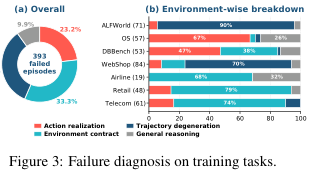
2. 方法：四层生命周期 harness
LIFE-HARNESS 把 agent 交互写成一个带 contract 的状态机，然后在生命周期的四个位置插入干预：交互前校准 contract，任务条件阶段检索 procedural skill，执行前校验 action，执行后监控 trajectory。它的关键约束是：不使用测试标签，不修改 benchmark task，不改变 environment transition 或 evaluator。
2.1 LLM agent runtime formalization
一个 episode 由 task \(x\)、环境 \(E\)、环境契约 \(C\) 和 step budget \(B\) 定义。初始化为：
$$s_0,o_0 = E.\mathrm{INIT}(x).$$第 \(t\) 步的轨迹包含 contract、task、历史 action 与 observation：
$$\tau_t=(C,x,o_0,a_0,o_1,\ldots,a_{t-1},o_t).$$模型产生 action，环境执行并返回新状态和 observation：
$$a_t \sim \pi_\theta(\cdot \mid \tau_t), \qquad s_{t+1},o_{t+1}=E.\mathrm{STEP}(s_t,a_t).$$如果 action 不可执行，错误反馈仍是轨迹的一部分。LIFE-HARNESS 的切入点就是在 \(a_t\) 前后对这个接口做确定性、可复用的约束。
Environment Contract Layer
在交互前把稳定工具规则、policy 约束、answer format、常见陷阱写入增强 contract \(C'=C\oplus\Delta C\)。
Procedural Skill Layer
从训练轨迹沉淀 reusable skills，用 BM25 对当前 task description 检索 top-1 skill，作为非参数 guidance。
Action Realization Layer
模型输出后、环境执行前，用 tool schema、admissible action set、argument constraints、task policy 做校验和 canonicalization。
Trajectory Regulation Layer
环境反馈后监控 repetition、stagnation、invalid retries、budget exhaustion，并在退化明显时给 recovery message 或 corrective directive。
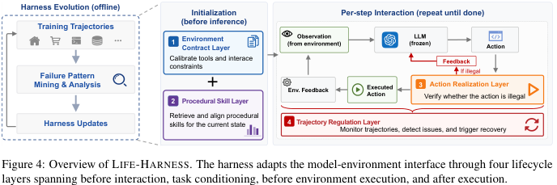
2.2 Action realization 与 trajectory regulation
Action Realization Layer 对模型 action \(a_t\)、轨迹 \(\tau_t\) 和状态 \(s_t\) 做执行前判定：
$$z_t=\mathrm{REALIZEACTION}(a_t,\tau_t,s_t), \qquad z_t\in\{\mathrm{EXEC}(a_t),\mathrm{BLOCK}(m_t)\}.$$Trajectory Regulation Layer 在环境反馈后计算 recovery signal，其中 \(b_t=B-t-1\) 是剩余 budget：
$$r_t=\mathrm{REGULATETRAJECTORY}(\tau_t,a_t,o_{t+1},b_t).$$实现上，\(r_t\) 可以为空，也可以是软提示、重复失败警告，或在确定性退化时更强的纠正指令。
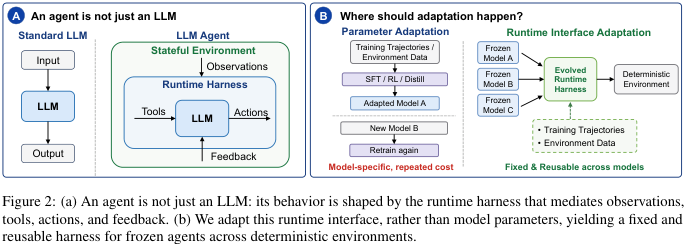
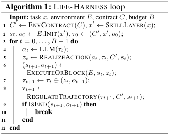
轨迹驱动的 harness evolution
作者用 Codex 读取上一轮完整训练轨迹、summary metrics 和当前 harness 代码，要求它找出 recurring failure patterns，并把每个 pattern 映射到最早可可靠干预的 lifecycle point。论文附录 A.2 给出了 prompt template，附录 A.3 给出了最终 harness inventory；但 PDF 没有列出每一轮 raw trajectory 文件，严格复现实验仍需依赖开源仓库和原始 benchmark 运行环境。
3. 实验设计与复现细节
实验覆盖三个 benchmark suites：\( \tau \)-bench、\( \tau^2 \)-bench 和 AgentBench。作者只用 Qwen3-4B-Instruct 的训练轨迹演化 harness，测试集在演化中始终隐藏；最终 frozen harness 复用于其他 17 个模型 backbone。
Benchmarks and tasks
- \( \tau \)-bench: Airline, Retail，报告 Pass@1 与 Pass3。
- \( \tau^2 \)-bench: Telecom，报告 Pass@1 与 Pass3。
- AgentBench: ALFWorld, WebShop, OS, DBBench，按官方实现单次评估。
- 这些任务都有稳定工具接口、可复现状态转移和确定性评估标准。
Models and evaluation
- Source model for harness evolution: Qwen3-4B-Instruct。
- Backbones: Qwen family、Llama family、xLAM family，含 instruct、reasoning、agent-trained 模型。
- 所有评估 temperature 为 0.0。
- \( \tau \)-bench 和 \( \tau^2 \)-bench 使用 DeepSeek-V4-Flash 作为 user LLM，每个 task 运行 3 次。
| Task | Raw Train Pool | Train Used | Test / Eval | Raw Pool Total |
|---|---|---|---|---|
| ALFWorld | 3,150 | 100 | 109 | 3,259 |
| DBBench | 4,803 | 100 | 300 | 5,103 |
| OS Interaction | 1,000 | 100 | 144 | 1,144 |
| WebShop | 9,000 | 100 | 200 | 9,200 |
| Airline | 30 | 30 | 20 | 50 |
| Retail | 74 | 74 | 40 | 114 |
| Telecom | 74 | 74 | 40 | 114 |
Table 3 重建：Train Used 是每次 harness-evolution run 实际采样的训练样本数，不是每轮执行全部 raw pool。
| Benchmark | Temperature | Max tokens per step | Max step |
|---|---|---|---|
| ALFWorld | 0.0 | 4096 | 50 |
| DBBench | 0.0 | 4096 | 15 |
| OS | 0.0 | 4096 | 8 |
| WebShop | 0.0 | 4096 | 20 |
| Airline | 0.0 | 2048 | 200 |
| Retail | 0.0 | 2048 | 200 |
| Telecom | 0.0 | 2048 | 200 |
Table 4 重建：论文未在 PDF 中报告硬件成本、每轮 Codex 调用成本或完整 trajectory log 数量；这些属于复现时需要核对的外部信息。
最强复现信号
附录 A.3 把 7 个环境的 harness inventory 按四层列出，具体到工具描述、skill retrieval、action guard、SQL/MySQL repair、WebShop buy-now precheck 等。
需要仓库补全
PDF 对最终代码只给 inventory 和 GitHub 链接，未在正文逐行展示所有 harness implementation；严格复现实验需拉取仓库核对。
评测漂移风险
DeepSeek-V4-Flash user LLM、Qwen3.x/Llama/xLAM 具体 checkpoint、benchmark 版本如果变动，Pass@1 和 Pass3 可能漂移。
4. 实验结果与核心结论
结论并不只是“平均分涨了”：更关键的是同一个 frozen harness 从 Qwen3-4B-Instruct 轨迹演化后能迁移到 17 个其他模型，说明它捕获的是环境侧结构，而不是某个模型的行为模式。
| Suite | Benchmark | Metric | w/o | w/ LIFE-HARNESS | Rel. Gain | Improved |
|---|---|---|---|---|---|---|
| AgentBench | ALFWorld | Pass@1 | 41.1% | 75.7% | +84% | 17/18 |
| WebShop | Pass@1 | 31.4% | 44.0% | +40% | 18/18 | |
| OS | Pass@1 | 34.7% | 41.2% | +19% | 18/18 | |
| DBBench | Pass@1 | 48.4% | 64.6% | +34% | 18/18 | |
| \( \tau \)-bench | Airline | Pass@1 | 49.7% | 62.6% | +26% | 16/18 |
| Pass3 | 34.7% | 52.2% | +50% | 17/18 | ||
| Retail | Pass@1 | 56.2% | 61.8% | +10% | 14/18 | |
| Pass3 | 37.9% | 45.3% | +19% | 15/18 | ||
| \( \tau^2 \)-bench | Telecom | Pass@1 | 55.3% | 69.0% | +25% | 17/18 |
| Pass3 | 41.5% | 52.6% | +27% | 18/18 |
Table 1 重建：所有数字是 18 个 backbone 的平均。Improved 表示该 benchmark/metric 下被 LIFE-HARNESS 改善的模型数。
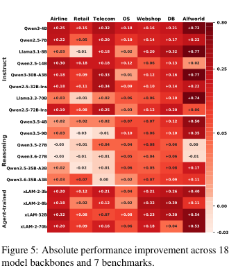
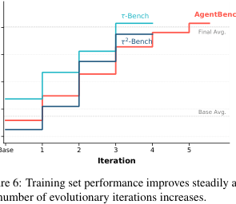
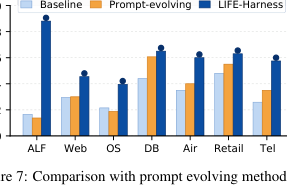
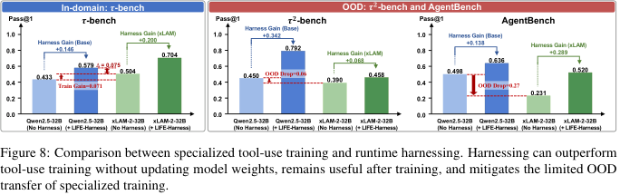
| Removed layer | Airline | Retail | Telecom | ALFWorld | WebShop | OS | DBBench | 主要解读 |
|---|---|---|---|---|---|---|---|---|
| w/o Contract | -8.3% | -17.5% | -16.0% | -1.0% | -4.4% | -14.1% | -16.9% | 客服和数据库任务强依赖稳定 tool/policy/answer-format contract。 |
| w/o Skill | -8.3% | -15.9% | -17.4% | -1.0% | -2.2% | -14.1% | -3.1% | Procedural skill 对 workflow 和 OS 任务帮助更明显。 |
| w/o Action | -61.7% | -15.9% | -10.1% | -1.0% | -6.6% | -59.6% | -4.6% | Airline 和 OS 对可执行 action/formatted command 极敏感。 |
| w/o Trajectory | -3.3% | -16.7% | -36.2% | -86.5% | -26.4% | -14.1% | -4.6% | ALFWorld 和 WebShop 的长程循环、stagnation、budget exhaustion 是主要失败源。 |
Table 2 重建：值为相对 full LIFE-HARNESS 的 accuracy drop。每个 layer 都在至少部分环境中不可替代。
5. Figure / Table 导航与覆盖情况
PDF 中很多图表是矢量对象，`arxiv_prepare.py` 不能可靠抽成独立位图；本页面对关键 figures/tables 使用页面渲染图裁剪，并对 Table 1/2/3/4 用 HTML 重建。长附录表 5/6/7 和完整 Table 8 保留原文裁图，正文只重排核心信息。
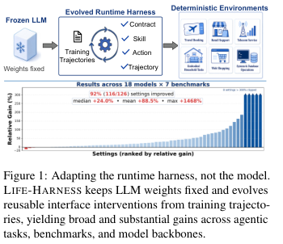
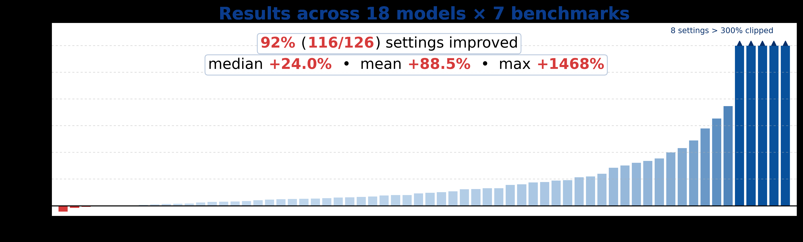
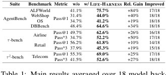
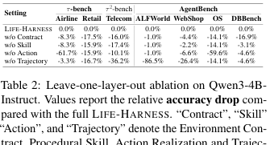
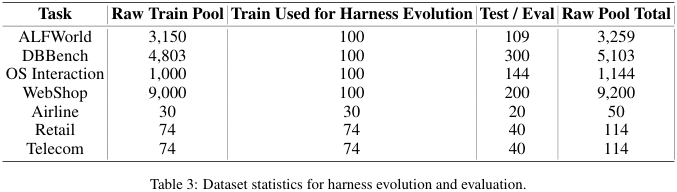
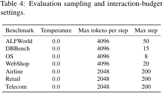
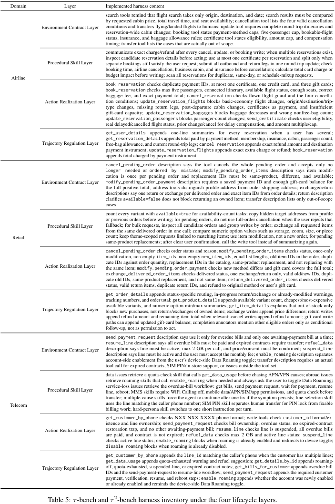
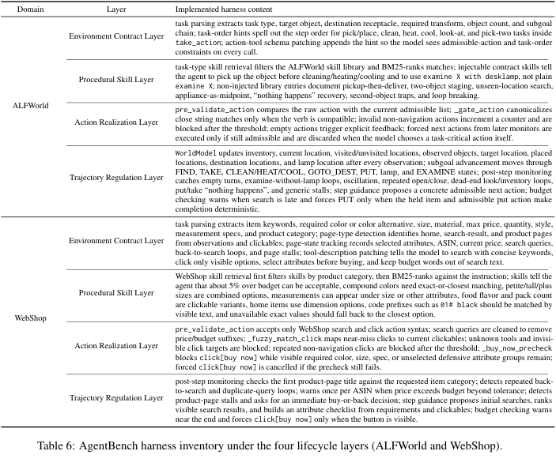
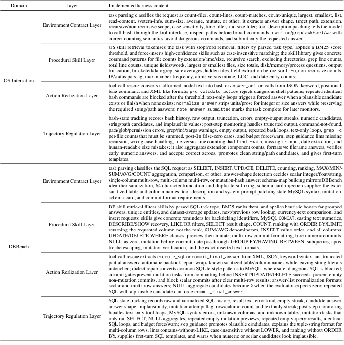
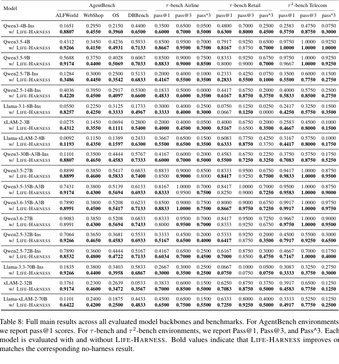
6. 复现清单
复现 LIFE-HARNESS 的难点不在跑一个 prompt，而在复建“轨迹收集 → failure mining → layer-local patch → regression check → frozen harness evaluation”的闭环。论文给出了高层 prompt、数据划分、评估预算和 harness inventory；完整代码与细节需要结合 GitHub 仓库。
可以直接从论文固定的内容
- Source model: Qwen3-4B-Instruct。
- Evaluation temperature: 0.0。
- AgentBench max steps: ALFWorld 50, DBBench 15, OS 8, WebShop 20。
- \( \tau \)-bench / \( \tau^2 \)-bench max steps: 200, max tokens per step 2048。
- Procedural Skill Layer: all experiments use top-1 retrieved skill。
- Training/eval split sizes: Table 3。
需要代码仓库或人工核对的内容
- 每个环境最终 harness 的完整实现和触发阈值。
- 训练轨迹文件、Codex 迭代轮次、每轮 regression cases。
- DeepSeek-V4-Flash user simulator 版本和服务端行为。
- 所有模型的确切 checkpoint、推理框架、并发和 tokenizer 版本。
- 硬件、运行时间和成本在 PDF 中未报告。
| 层 | 复现时要实现的最小接口 | 论文中的具体例子 | 常见失败风险 |
|---|---|---|---|
| Environment Contract | 可注入 system/tool descriptions 的 contract patcher。 | Airline search 只能 origin/destination/date；Retail pending order tool 的 cancellation reason；DBBench schema card 和 MySQL syntax。 | 把 test-specific clue 写进 contract 会污染评测。 |
| Procedural Skill | 从训练轨迹蒸馏 skill library，并对 task description 做 BM25 top-1 retrieval。 | WebShop category/color/size matching；OS count-files/count-lines templates；Telecom overdue-bill workflow。 | 检索过多 skill 会污染上下文，top-1 是论文的重要约束。 |
| Action Realization | 执行前 parser、schema validator、safe canonicalizer、block message。 | OS malformed text 转 bash/action；DBBench SQLite-to-MySQL repair；WebShop invisible click target blocking。 | 过度 canonicalization 可能把错误 intent 改成看似合法 action。 |
| Trajectory Regulation | 状态跟踪器、重复/停滞检测、预算 warning、强制 recovery 的安全条件。 | ALFWorld world model 与 subgoal advancement；WebShop back-to-search loop；DBBench repeated SQL loop。 | 强制 action 只能在确定性条件充分时触发，否则会覆盖模型正确策略。 |
这张表不是论文原表，而是从附录 A.3 的 Table 5/6/7 抽象出的复现接口清单。
7. Reviewer Critique
我会把这篇论文看作“agent interface engineering”的强实证论文，而不是新模型训练算法论文。它最有价值的地方是把 failure taxonomy、harness layer 和跨模型迁移结果连起来；最需要谨慎的地方是 harness evolution 中人工/Codex 介入的可复现性和 benchmark-specific 工程量。
Strengths
- 问题定义清楚：明确把适配对象从 \(\theta\) 转到 \(H\)，并限定在 deterministic environments。
- 证据链完整：failure diagnosis、四层方法、主结果、prompt-only 对比、leave-one-layer-out ablation、tool-use training 对比都有覆盖。
- 跨模型迁移是强信号：只用 Qwen3-4B-Instruct 演化，迁移到 17 个 backbone，说明 harness 学到的主要是环境侧结构。
- 附录 inventory 具体到环境和层，避免停留在抽象框架。
Weaknesses
- Codex 辅助 harness evolution 的 human-in-the-loop 边界不够量化：每轮花了多少工程时间、失败 patch 如何筛选、负例如何回归，都需要更多日志。
- 评测环境虽然 deterministic，但 harness 很可能吸收 benchmark implementation quirks；OOD 到真正开放工具生态仍未证明。
- 强模型个别任务出现负增益，说明固定 harness 仍可能 over-trigger 或压制模型策略。
- 没有和更系统的 program synthesis / verifier-based harness search 做同等预算对比。
Missing ablations
应报告每层内部组件的 ablation，例如只保留 action block、不做 canonicalization，或只做 trajectory warning、不做 forced next action。
Failure modes
当环境规则本身变化、工具 schema 不稳定、反馈有噪声、用户目标开放时，基于稳定 contract 的 harness 可能快速失效。
Suggested experiments
加入 time-budget matched human prompt engineering、automated harness-code search、跨 benchmark family 迁移，以及真实在线工具 API 漂移测试。
8. 对我的研究方向的启发
这篇论文对 agent、RLVR、自进化、questioner-solver、replay、diversity 和 evaluation 的启发，不是“不要训练模型”，而是把可验证、可复用、可回归的环境侧结构从模型更新中解耦出来。
1. 把 self-evolution 的产物从 model delta 扩展到 interface delta
如果训练轨迹暴露的是稳定外部规则，最合适的产物可能不是 gradient update，而是 contract patch、validator、canonicalizer、recovery policy 或 skill memory。这样更容易审计，也更容易跨模型迁移。
2. Evaluation 应区分 reasoning failure 与 interface failure
论文的优点在于先做 failure taxonomy，再决定优化位置。对 RLVR 或 agent benchmark，应该把 invalid action、wrong tool protocol、loop/stagnation 和 semantic reasoning 错误拆开，否则 reward 会混合多个问题。
3. Replay 可以是 harness regression set
传统 replay 防止模型遗忘；这里的 replay 形态可以是“以前成功轨迹不能被新 harness patch 破坏”。这给 agent harness 自进化提供了一个更稳定的 regression protocol。
4. Diversity 不只发生在问题空间，也发生在 failure/intervention 空间
若要做 questioner-solver 或自动环境生成，可以让 questioner 生成能覆盖不同 lifecycle failure 的任务，而不是只追求任务文本多样性。
一句话判断
LIFE-HARNESS 适合被当作 agent 系统里的“外部可验证适配层”：当失败来自规则、接口、格式、循环和反馈解释时，先改 harness；当失败来自真正的知识和推理能力时，再考虑模型训练。